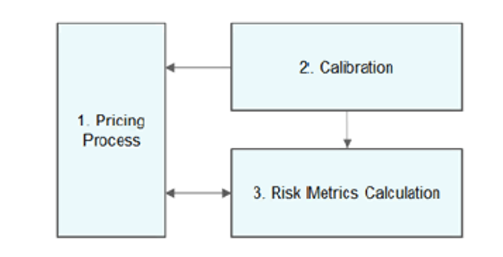
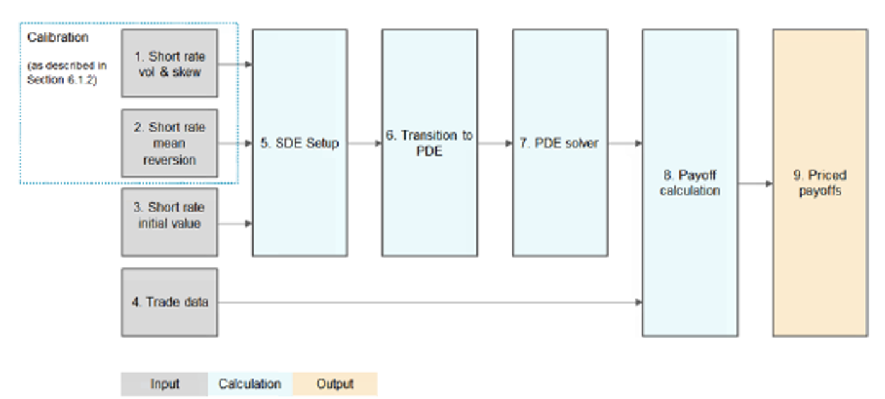
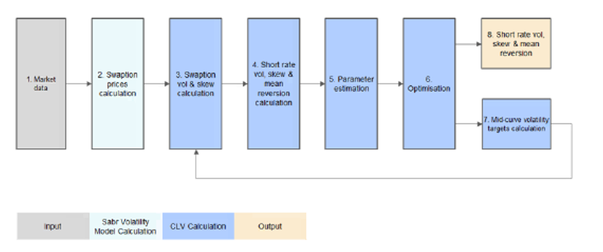
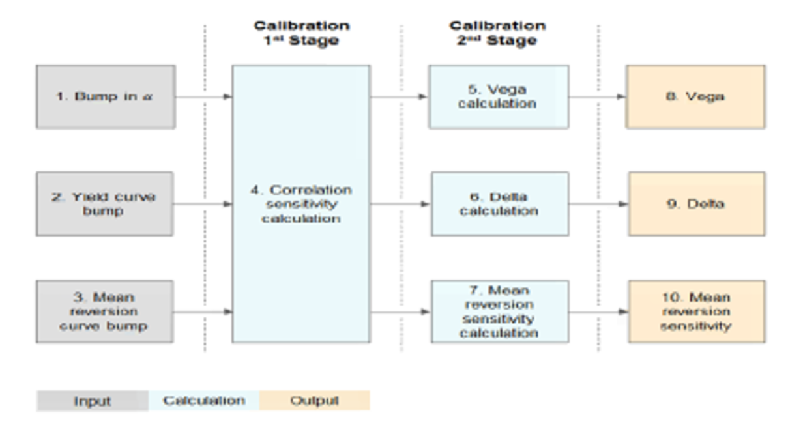

3. Model Methodology#
3.1. Overview of Model Design#
The CLV model is a short rate local volatility model, in which it can be divided into three interlinked sub-models:
Pricing Process
Calibration
Risk Metrics Calculation
In the following section, each of the three sub-models is discussed separately. The dependencies between the sub-models can be presented in the form shown below in Figure 4.1.
 Figure 4.1: Overview of the CLV Model Components
The Pricing Process component of CLV is used to price complex structured rates derivatives that either cannot be priced with simpler models or for which LMM does not offer a significant advantage in pricing accuracy. To ensure robust pricing, the model is calibrated using market data via the Calibration component. The Risk Metrics Calculation component enables computation of several risk metrics, including price sensitivity to the value, volatility and the mean reversion of the underlying.
Each arrow going from one sub-model to another in Figure 4.1 denotes that there is a flow of data between them. The following dependencies between CLV components are outlined in Figure 4.1:
• Both the Pricing Process (1) and Risk Metrics Calculation (3) depend on the parameters generated in the Calibration component (2).
• The mutual dependency between the Risk Metrics Calculation (3) and the Pricing Process (1) is explained as follows:
In the Risk Metrics Calculation, trades need to be re-priced given the newly re-calibrated model curves.
These trades are fed to the Pricing Process which, in turn, returns the new PVs.
• In a standalone run of the Pricing Process (1) there is no dependency on the Risk Metrics Calculation (3).
For each sub-model, a detailed breakdown of the individual process components follows, including an outline of its inputs and outputs, a summary of the component’s purpose and a commentary on the details of the procedure.
3.1.1. Pricing Process#
This sub-model is the procedure that calculates prices of in-scope interest rate derivatives. To this end, the main purpose of the model is to predict the future behavior of interest rates by modeling the short rate given its current value. Given this objective, a set of stochastic differential equations (SDEs) governing the evolution of the short rate through time is constructed. This system of SDEs is then turned into a partial differential equation (PDE) whose solution is the present value of the final payoff. Currently, the PDE method of solving the system of SDEs is the only one used in the EOD (end of day) pricing process.
The flow within the Pricing Process is summarized below in Figure 4.2 and each of the steps identified is discussed in further detail in subsequent sections. For further details, please see section 4.2 and 5.1.
 Figure 4.2: Overview of the Pricing Process Component of the CLV model
3.1.2. Calibration#
In this sub-model, calibration parameters are computed from the current market data. The objective is to fit the parameters in such a way that the implied prices of the selected instruments match the calibration targets to the desired accuracy.
The parameters that could go through calibration are:
Volatility of the short rate \(\sigma(t)\)
Skew of the short rate \(b_r(t)\)
Mean reversion of the short rate \(\lambda(t)\)
Not all parameters have to be calibrated, if one of the above curves is not calibrated, then it is an input externally provided by the user. The choice of parameters up for calibration is defined within the calibration mode chosen. The description of different calibration modes and details of their construction are presented in Section 6.
The calibrated parameters are then used in the Pricing Process to obtain the value of the short rate in a future period and hence, to price interest rate derivatives. These parameters are quantities not directly observable in the market. The calibration process utilizes the fact that the observable price of any derivative is a function of its volatility, which for the products in scope is in turn modeled as a function of short rate volatility, skew and mean reversion. As such, analytical approximation methods are used to calculate the inverses of these functions to extract the implied calibration parameters. The key step is the derivation of the relationship between the short rate and the swap rate.
Independent from the calibration mode chosen, the calibration process can be segmented into distinct stages depicted below in figure 4.3. The following sub-sections describe each individual step in detail.
 Figure 4.3: Overview of the Calibration Component of the CLV model
3.1.3. Risk Metric Calculation#
The main risk metrics that can be calculated are sensitivities of the pricing function to the volatility of the underlying (Vega), value of the underlying (Delta) and mean reversion of the underlying.
The most straightforward approach to calculating risks resulting from fluctuations in these quantities is to alter the market data directly and then to re-calibrate the entire model. However this is not ideal, as the method results in very noisy risk, requires significant computational resources, while at the same time introducing the possibility of calibration failures. In this section, an alternative approach requiring only one base calibration step is applied. The two methods are distinguished by referring to the resulting risks as external and internal risks respectively.
The three main risks discussed in this section are all computed using similar strategies. Even though each risk is calculated separately, the overall framework that the calculation is conducted in is presented below in Figure 4.4.
 Figure 4.4: Overview of the Risk Metrics Calculation Component of the CLV model
3.2. Model Description#
The idea behind CLV model is to capture skew effect by introducing local volatility with displaced skew, while retaining fast calibration by modeling 1-factor short rate dynamics. In this section, we will explain the underlying mathematical methodology of CLV model in details. In particular we will assume short rate dynamics is shifted lognormal, and we will show how to link between short rate and swap rate via analytical approximation in Section 6.1.1.
3.2.1. CLV Model Short Rate Dynamics#
Let \(f(0;t)\) be instantaneous forward rate, \(r(t)\) be short rate, \(r_1(t)\) be the stochastic part of the short rate, i.e.,
We are essentially modeling the stochastic part of short rate: \(r_1(t)\).
3.2.1.1. Formulation 1#
Let \(\Phi(t)\) be the proper convexity adjustment to ensure arbitrage free, under risk neutral measure the CLV model dynamics can be summarized by following SDE:
There are 3 model curves in CLV model, which are all assumed to be piecewise constant:
Short rate volatility \(\sigma(t)\) controls overall volatility level
Short rate mean reversion \(\lambda(t)\) controls how volatility is distributed over time (forward volatility)
Short rate skew \(b_r(t)\) controls the slope of swaption volatility
Our Project Implementation of Local Volatility Function:
namespace xsigma {
// Cheyette model volatility calculation implementing σ_r(t,r_1(t)) = σ(t)(1 + b_r(t)r_1(t))
void model_cheyette::volatility(
size_t t,
const vector<double>& x,
const vector<double>& y,
matrix<double>& output) const {
const auto to = dates_[t + 1];
const auto alpha = scaled_volatility_[t]; // σ(t)
const auto G = model_->integral_decay()[t];
const auto x_max = 10.0; // Maximum x value for numerical stability
const auto ny = output.rows();
if (!is_almost_zero(G)) {
const auto beta = skew_parameter(to); // b_r(t)
for (size_t row = 0; row < ny; ++row) {
vector<double> output_row(output[row]);
const auto tmp = (G / beta) * y[row] + 1.;
// Apply local volatility function with skew: σ(t) * (1 + b_r(t) * x)
output_row = alpha * min(fabs(x + tmp), x_max);
}
} else {
// Flat volatility case when mean reversion is zero
vector<double> tmp(output[0]);
tmp = alpha * min(x + 1., x_max);
for (size_t row = 1; row < ny; ++row) {
output[row].deepcopy(tmp);
}
}
}
// Skew parameter interpolation for b_r(t)
double model_cheyette::skew_parameter(const datetime& date) const {
const auto& dates = parameter_.skew_parameter_dates();
const auto& values = parameter_.skew_parameter();
// Find position in date vector
auto it = std::lower_bound(dates.begin(), dates.end(), date);
if (it == dates.begin()) {
return values(0, 0);
} else if (it == dates.end()) {
return parameter_.long_term_skew_level();
} else {
// Linear interpolation between skew parameter dates
size_t idx = it - dates.begin();
double t1 = dates[idx - 1].as_float();
double t2 = dates[idx].as_float();
double t = date.as_float();
double w = (t - t1) / (t2 - t1);
return (1.0 - w) * values(idx - 1, 0) + w * values(idx, 0);
}
}
}
This implementation calculates the local volatility function σ_r(t,x) = σ(t)(1 + b_r(t)x) where σ(t) is the base volatility, b_r(t) is the skew parameter, and x represents the short rate factor r_1(t). The skew parameter is interpolated linearly between calibration dates to ensure smooth volatility surfaces.
3.2.1.2. Formulation 2#
Alternatively, we can introduce a new curve, known as \(b(t)\), which is the exponential of the negative integral of \(\lambda(t)\), i.e. \(b(t) = e^{-\int_0^t \lambda(s)ds}\)
Let \(\overline{r_1(t)} = \frac{r_1(t)}{b(t)}, \overline{\Phi(t)} = \frac{\Phi(t)}{b^2(t)}\), and through change of variable, we also re-factor the original volatility and skew, \(\overline{\sigma(t)} = \frac{\sigma(t)}{b(t)}, \overline{b_r(t)} = b_r(t)b(t)\). The new parameterized CLV model will be displayed as below:
The model will be the same with 0 mean-reversions. Otherwise \(r_1(t)\) and \(\Phi(t)\) will be factored by \(b(t)\), respectively.
In the case of Formulation 2, below 3 model curves will be piecewise constant:
\(\overline{\sigma(t)}\): re-factored short rate volatility
\(b(t)\): exponential of the negative integral of \(\lambda(t)\)
\(\overline{b_r(t)}\): re-factored skew
Our Project Implementation of SDE Evolution:
namespace xsigma {
// Monte Carlo step function implementing the Cheyette SDE system
void model_cheyette::step(
const change_of_measure& adjuster,
size_t time_idx,
const matrix<double>& rng,
matrix<double>& current,
matrix<double>& next) const {
// Copy current state to next
current.deepcopy(next);
const auto num_factors = parameter_.number_of_factors();
const auto num_paths = current.columns();
const auto sigma_sv = model_->incremental_volatility_sv()[time_idx];
const auto covariance_offset = num_paths * covariance_index();
const auto& G_matrix = model_->integral_decay();
// Apply Cheyette-specific evolution for each Monte Carlo path
for (size_t path = 0; path < num_paths; ++path) {
for (size_t factor = 0; factor < num_factors; ++factor) {
// Get current state values
const auto x_current = current(0, path); // Short rate factor r_1(t)
const auto y_current = current(1, path); // Auxiliary factor Φ(t)
// Calculate local volatility σ_r(t,r_1(t))
const auto vol = calculate_local_volatility(x_current, y_current, time_idx);
// Apply stochastic evolution
const auto dt = model_->time_steps()[time_idx];
const auto dW = rng(factor, path);
// Update short rate factor: dr_1(t) = (Φ(t) - λ(t)r_1(t))dt + σ_r(t,r_1(t))dW
next(0, path) = x_current +
(y_current - model_->decay()[time_idx] * x_current) * dt +
vol * sqrt(dt) * dW;
// Update auxiliary factor: dΦ(t) = (σ_r²(t,r_1(t)) - 2λ(t)Φ(t))dt
next(1, path) = y_current +
(vol * vol - 2.0 * model_->decay()[time_idx] * y_current) * dt;
}
}
// Apply change of measure adjustment for risk-neutral pricing
adjuster.adjust(time_idx, next);
}
private:
// Helper function for local volatility calculation
double calculate_local_volatility(double x, double y, size_t time_idx) const {
const auto base_vol = scaled_volatility_[time_idx];
const auto skew = skew_parameter(dates_[time_idx + 1]);
// Apply local volatility function: σ(t,x) = σ(t) * (1 + b(t) * x)
return base_vol * (1.0 + skew * x);
}
}
This implementation discretizes the Cheyette SDE system using Euler-Maruyama scheme. The short rate factor r_1(t) follows a mean-reverting process with local volatility, while the auxiliary factor Φ(t) evolves deterministically to maintain the arbitrage-free condition. The change of measure adjustment ensures proper risk-neutral pricing.
3.2.2. Zero Bond Reconstruction#
Let \(B(t,T)\) be zero bond price observed at \(t\) with expiry \(T\). \(B(0,t)\) and \(B(0,T)\) are zero bonds from initial yield curve, we have the following analytical reconstruction formula for \(B(t,T)\) under formulation 1:
Similarly, under formulation 2, the zero bond reconstruction formula is as below:
As a result we can project future discount factors as well as Libor/swap rates directly from \(r_1(t)\) and \(\Phi(t)\) (or \(\overline{r_1(t)}\) and \(\overline{\Phi(t)}\) in alternative formulation). For example, to project swap rate:
On float leg, assume that i-th coupon accruals from \(T_i^S\) to \(T_i^E\) and paid at \(T_i^F\), the float leg PV is:
On fix leg, assume the j-th coupon accruals from \(T_j^S\) to \(T_j^E\) and paid at \(T_j^F\), the fix leg annuity is:
Therefore, with above formula for \(B(t,T)\), swap rate can then be computed by \(\frac{FloatLegPV}{FixLegAnnuity}\)
Our Project Implementation of Zero Bond Pricing:
namespace xsigma {
// Conditional pricing for discount factors using zero bond reconstruction
void model_cheyette::conditional_price(
const matrix<double>& states,
const datetime& from,
const datetime& to,
vector<double>& output) const {
// Use underlying HJM model for conditional pricing
// This implements: B(t,T) = B(0,T)/B(0,t) * exp(-Λ(t,T)r_1(t) - ½Λ²(t,T)Φ(t))
model_->conditional_price(states, from, to, output);
// Apply Cheyette-specific adjustments for long-term skew level
if (parameter_.long_term_skew_level() != 0.0) {
const auto time_fraction = parameter_.parameters()->day_convention()->fraction(from, to);
const auto adjustment = parameter_.long_term_skew_level() * time_fraction;
for (auto& value : output) {
value += adjustment;
}
}
}
}
This implementation computes conditional discount factors B(t,T) using the zero bond reconstruction formula. The underlying HJM model handles the core calculation involving the integral decay function Λ(t,T), while Cheyette-specific adjustments account for long-term skew effects in the volatility structure.
3.2.3. FinBias#
Under new curve framework, forecast curve and discount curve can be different. In this case, CLV models the dynamics of short rate of the discount curve and computes its discount factor through zero bond reconstruction formula, and then infers the discount factor of the forecast curve by applying a deterministic basis adjustment (“FinBias”) to that of the discount curve. In particular, now float leg PV is:
where:
In above notations, subscript “D” indicates discount factor of the discount curve, and “F” indicates discount factor of the forecast curve. In particular, \(B_D(0,\cdot)\) and \(B_F(0,\cdot)\) are calculated from initial discount/forecast curve respectively, \(B_D(t,\cdot)\) is computed from zero bond reconstruction formula while \(B_F(t,\cdot)\) is derived via above finbias relationship.
Therefore under new curve framework, Libor/swap rates can be projected similarly as described above.
For more details about finbias, as well as the choice of the deterministic basis adjustment, please refer to [6].